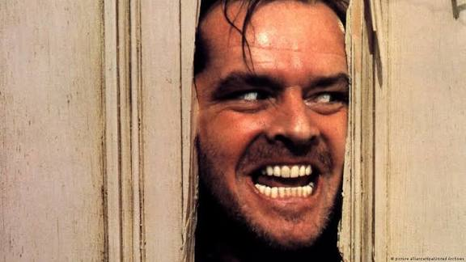
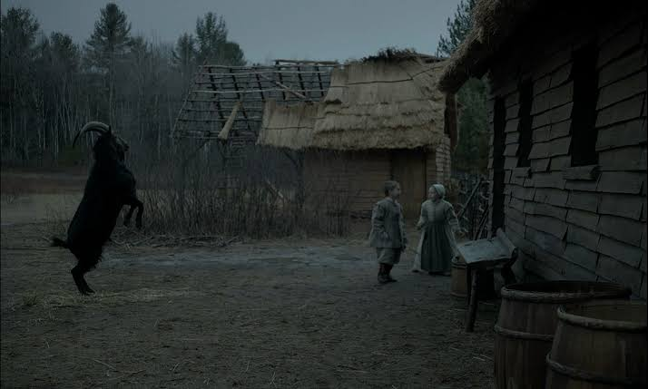
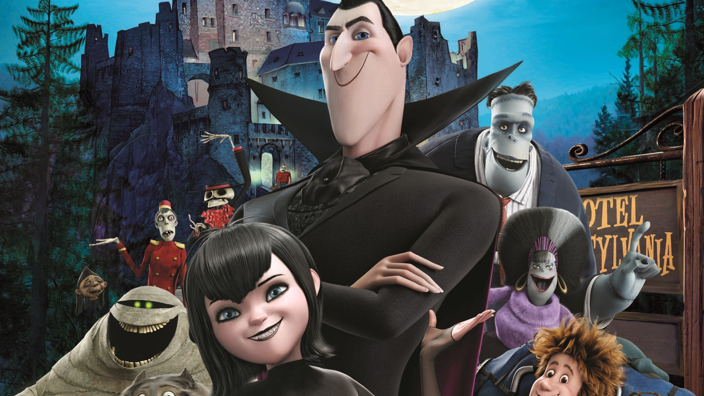

Especial de Halloween
Home
História
Dicas
Jogo da velha
É a vez do Vamp
Horror movies

O Iluminado
Conheça o filme

A Bruxa
Conheça o fime

Hotel Transilvânia
Conheça o filme
Sobre o autor
Para ver o portfólio do autor, clique abaixo.
Meu Portfólio
Curiosidades